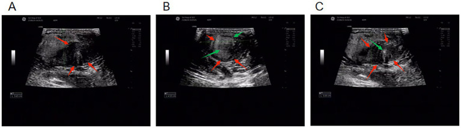
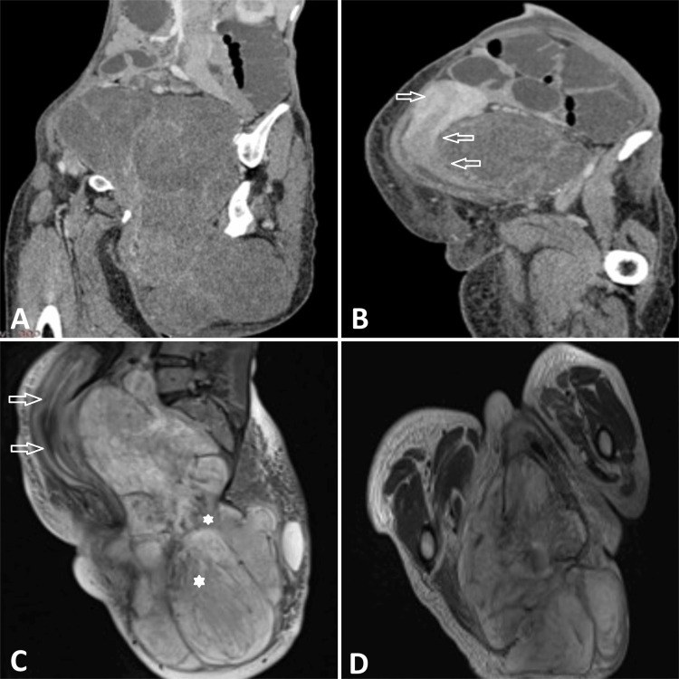
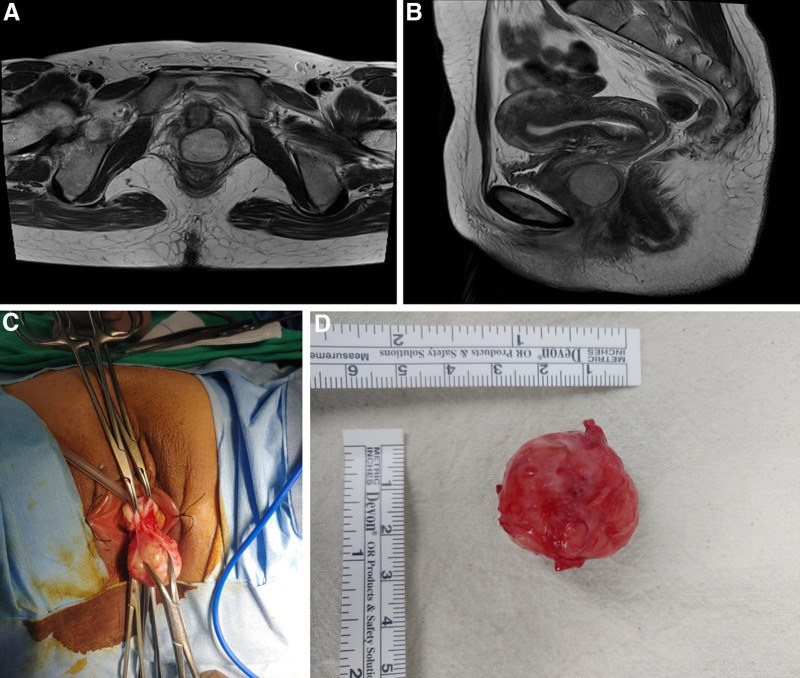
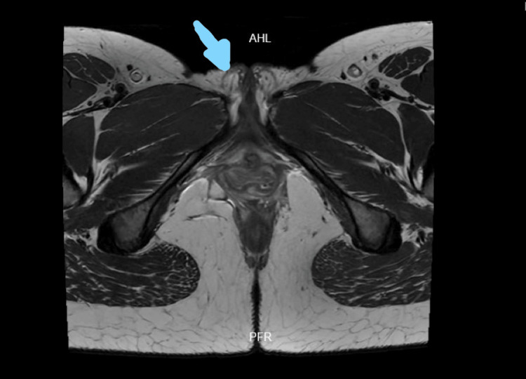
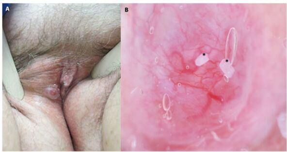

580 — U/giả u đặc hiếm gặp âm hộ – âm đạo: angiomyxoma, u cơ trơn, hidradenoma & ACC tuyến Bartholin / Rare solid vulvovaginal tumours: aggressive angiomyxoma, leiomyoma, hidradenoma papilliferum and adenoid cystic carcinoma
Tags: pattern:khoi-dac-am-ho pattern:khoi-dac-am-dao pattern:u-mo-mem-myxoid pattern:u-tuyen-bartholin vung:am-ho vung:am-dao vung:sinh-mon protocol:MRI-chau protocol:US-translabial incidentaloma:khoi-am-ho
Mức chắc chắn (certainty): tổng hợp y văn (literature synthesis) — tổng hợp từ các ca có bình duyệt và tổng quan mở 2023–2026, có ca nguyên văn minh họa (ảnh MRI/US lấy từ ca gốc). Số liệu định lượng giữ nguyên văn từ nguồn.
1. Tổng quan bệnh học – cơ chế hình ảnh
Giải phẫu cần nhớ trước khi đọc ảnh:
- Âm hộ gồm môi lớn, môi bé, âm vật, tiền đình; tuyến Bartholin đổ vào rãnh tiền đình ở 4 giờ và 8 giờ, ống tuyến dài 2–2,5 cm.
- Âm đạo là ống cơ–niêm mạc, phía trước giáp bàng quang/niệu đạo, phía sau giáp trực tràng; thành bên liên quan đám rối tĩnh mạch và thần kinh và hố ngồi–trực tràng (ischioanal fossa).
- U "đặc" vùng này có thể xuất phát từ mô mỡ dưới da, mô liên kết–cơ trơn, mạch máu, tuyến Bartholin/Skene, tuyến giống vú vùng sinh dục — vì vậy cùng một khối, nhiều dòng tế bào.
Bốn nhóm mô học và cách chúng "hiện hình":
Nhóm myxoid (chất nền nhầy) — đại diện: aggressive/deep angiomyxoma (AAM), myxoid leiomyoma, myxoid liposarcoma. Chất nền giàu hyaluronan + nước → T2 rất sáng, T1 thấp; dải xơ (collagen) cắt ngang chất nhầy → vân sọc/lượn sóng (laminated–swirled) giảm tín hiệu T2. Mật độ tế bào thấp → không hạn chế khuếch tán (ADC cao).
Nhóm cơ trơn — đại diện: leiomyoma âm hộ/âm đạo. Bó cơ trơn đan xen → T2 trung gian–thấp, đồng nhất, kiểu "xoáy" như cơ tử cung; ngấm thuốc đều.
Nhóm trung mô mạch–xơ — đại diện: angiomyofibroblastoma (AMF), cellular angiofibroma (CAF). Mạch thành mỏng (AMF) hoặc mạch thành dày hyalin hóa (CAF) + tế bào hình thoi; mỡ trong u (CAF) → T1 sáng, mất tín hiệu khi fat-sat.
Nhóm biểu mô/tuyến — đại diện: hidradenoma papilliferum (HP), ACC tuyến Bartholin, SCC, melanoma. Tế bào biểu mô xếp thành nhú/ống → T2 trung gian, ngấm thuốc; ACC xâm lấn quanh thần kinh → đường ngấm thuốc dọc thần kinh; hạch/di căn.
Ngưỡng định lượng và con số phải nhớ:
- AAM: tái phát tới ~40% dù cắt rộng; tái phát thường trong 3 năm nhưng có thể > 10 năm; ER/PR dương → có thể điều trị nội tiết (GnRH agonist).
- Kích thước là một chốt mềm: AAM thường > 5 cm, xâm lấn sâu, "cưỡi" cơ nâng hậu môn; AMF thường < 5 cm, nông, bờ rõ.
- Ung thư tuyến Bartholin: chiếm 3–4% ung thư âm hộ (y văn cũ 3–7%); trong đó ACC < 5%, < 350 ca** đã báo cáo; di căn xa **phổi > xương > gan > não, thời gian tái phát 6 tháng – > 15 năm; MYB/MYBL1 tái sắp xếp ở đa số.
- Hidradenoma papilliferum: là u phần phụ (adnexal) âm hộ hay gặp nhất; loạt 45 ca có kích thước 0,3–2,0 cm, màu hồng/đỏ; HPV âm; chuyển dạng ác tính rất hiếm.
- SCC âm hộ vẫn là ung thư âm hộ phổ biến nhất (~90%), melanoma ~5% — đừng để "u hiếm" che mất ung thư thường gặp.
2. Mẫu hình + chẩn đoán phân biệt theo vị trí (Gamut)
- Theo vị trí — "vị trí gợi ý dòng tế bào":
- Môi lớn/tiền đình 4h–8h: nang/áp-xe Bartholin, ACC tuyến Bartholin, leiomyoma, HP (rãnh gian môi), nang biểu bì.
- Rãnh gian môi/niêm mạc môi bé: HP (nốt đỏ nhỏ), melanoma không sắc tố, nang tuyến.
- Thành âm đạo: leiomyoma, AAM, CAF, nang Gartner (dạng nang), di căn.
- Sinh môn/hố ngồi–trực tràng: AAM (lan theo khoang), myxoid liposarcoma, u thần kinh, giả u viêm.
- Theo thành phần trên MRI — "cấu trúc quyết định tên":
- T2 rất sáng + vân sọc + bờ không rõ + > 5 cm → AAM.
- T2 rất sáng, bờ rõ, < 5 cm, nông → AMF (hoặc myxoid leiomyoma).
- T2 thấp/trung gian đồng nhất, kiểu cơ tử cung → leiomyoma.
- T2 trung gian, mạch thành dày + mỡ trong u, người lớn tuổi → CAF.
- Nốt nhỏ < 2 cm, đỏ, ở rãnh gian môi → HP.
- Khối nhỏ vùng 4h/8h, đau/tái phát sau chọc, xâm lấn thần kinh → ACC tuyến Bartholin.
- Ba câu hỏi trước mọi khối đặc vùng này: (1) Nang hay đặc? (có thành ngấm + dịch vs mô đặc ngấm); (2) Nông hay sâu qua cơ nâng? (quyết định mổ); (3) Có dấu hiệu xâm lấn/di căn? (bờ, thần kinh, hạch bẹn).

Khối đặc âm hộ không đồng nhất trên siêu âm — hình thái không đủ để phân biệt AMF với AAM/leiomyoma; cần MRI + mô bệnh. Nguồn: Liu D et al., Front Med 2026 (PMC13424204), CC BY 4.0.3. Bảng so sánh phân biệt (ma trận đối chiếu)
| Thực thể (entity) | Hình ảnh điển hình | Chốt vào (rule-in) | Chốt loại (rule-out) | Gợi ý xác nhận |
|---|---|---|---|---|
| Aggressive angiomyxoma (AAM) | Khối > 5 cm, T2 rất sáng với vân sọc/lượn sóng, bờ không rõ, "cưỡi" cơ nâng hậu môn, đẩy tạng chứ không xâm lấn; ngấm thuốc không đều (có thể giảm mạch) | T2 sáng + vân sọc + > 5 cm + lan sâu qua cơ nâng | Bờ rõ, < 5 cm, nông, không vân sọc → nghĩ AMF/leiomyoma | MRI tiểu khung có DWI; core biopsy trước mổ; theo dõi MRI nhiều năm |
| Angiomyofibroblastoma (AMF) | Khối < 5 cm, nông, bờ rõ, T2 sáng–trung gian, ngấm đều; không xâm lấn cơ nâng | Nông + bờ rõ + < 5 cm + người tuổi sinh sản | Lan sâu, vân sọc, > 5 cm → AAM | Cắt bỏ + mô bệnh; tái phát ít |
| Cellular angiofibroma (CAF) | Khối bờ rõ, mạch thành dày, có mỡ trong u; ngấm thuốc; thường ở phụ nữ lớn tuổi/đã mãn kinh | Mạch thành dày + mỡ trong u + tuổi lớn | Không mỡ, vân sọc, xâm lấn → AAM/sarcoma | Mô bệnh + IHC |
| Leiomyoma âm hộ/âm đạo | Khối T2 thấp–trung gian, đồng nhất, kiểu cơ tử cung; bờ rõ; có thể cuống | T2 thấp đồng nhất + giống cơ tử cung | T2 rất sáng, vân sọc → myxoid/AAM | MRI + mô bệnh; không chọc/dẫn lưu |
| Hidradenoma papilliferum (HP) | Nốt 0,3–2 cm, hồng/đỏ, ở rãnh gian môi; dermoscopy: mạch phân nhánh rõ (arborizing), nền hồng–trắng | Nốt nhỏ đỏ + mạch arborizing + vị trí rãnh gian môi | Khối lớn, sâu, xâm lấn → không phải HP | Cắt bỏ + mô bệnh; dermoscopy |
| ACC tuyến Bartholin | Khối nhỏ, có thể đau, tái phát vùng 4h/8h; T2 trung gian, bờ không rõ, xâm lấn quanh thần kinh; hạch bẹn muộn | Tái phát sau "chọc nang" + đau + xâm lấn thần kinh | Nang đơn thuần: thành mỏng, không ngấm, xẹp sau dẫn lưu | Sinh thiết + IHC (MYB), CT ngực; theo dõi > 10 năm |
| Nang/áp-xe Bartholin | Nang: dịch, thành mỏng; áp-xe: thành dày, ngấm, phù quanh, DWI hạn chế | Vị trí 4h/8h + dịch + xẹp sau dẫn lưu | Khối đặc, không xẹp, tái phát nhanh → sinh thiết | US + khám; MRI nếu tái phát |
| SCC âm hộ | Khối/loét bờ cứng, T2 trung gian–cao, xâm lấn, hạch bẹn | Loét + bờ cứng + hạch bẹn | Bờ rõ, T2 rất sáng, không loét → nghĩ u lành/myxoid | Sinh thiết + FIGO 2021 (bài 574) |
- Ảnh ghép đối chiếu: không tạo ảnh ghép cho bài này vì các ảnh thuộc nhiều ca khác nhau, khác mặt cắt — ghép sẽ gây hiểu nhầm "cùng một bệnh nhân".
Dấu hiệu "đuôi" và "vân sọc" của AAM
- Vân sọc/lượn sóng (laminated/swirled): các dải xơ thấp tín hiệu xen giữa chất nhầy sáng T2 — dấu hiệu gợi ý mạnh nhất trên MRI.
- Ngón tay/đuôi (finger-like projections): u len theo hố ngồi–trực tràng, khoang sinh môn, dây chằng — giải thích vì sao khó cắt sạch và tái phát tới 40%.
- Không hạn chế khuếch tán: ADC cao do mật độ tế bào thấp; nếu DWI sáng + ADC thấp phải nghĩ sarcoma/ung thư, không phải AAM điển hình.
4. Protocol chụp + theo dõi
- Siêu âm translabial/transperineal (đầu dò 7–12 MHz) — bước đầu:
- Đánh giá đặc vs nang, kích thước 3 chiều, độ sâu so với cơ nâng hậu môn, liên quan niệu đạo/trực tràng, tưới máu Doppler.
- Không chọc hút mù khối đặc nghi AAM/ung thư (nguy cơ gieo rắc/khó cắt sạch); nang đơn thuần thì có thể dẫn lưu.
- MRI tiểu khung — chuẩn đánh giá:
- T2 xoay dọc + ngang + vành (lát 3–4 mm), T1, T1 fat-sat, DWI (b = 0/800/1000) + ADC, T1 sau tiêm fat-sat (động–tĩnh mạch–muộn).
- Đo 3 chiều, mô tả bờ, vân sọc, mỡ trong u, xâm lấn cơ nâng/hố ngồi–trực tràng, thần kinh thẹn, hạch bẹn.
- Với ACC: đánh giá lan theo thần kinh (đường ngấm dọc dây thần kinh), hạch bẹn, và CT ngực tìm di căn phổi.
- Sinh thiết: core needle 14–16 G đường sinh môn dưới hướng siêu âm cho khối lớn/sâu; tránh cắt bỏ trước khi có MRI vì làm mất mặt phẳng mổ và tăng tái phát AAM.
- Theo dõi sau điều trị:
- AAM: MRI mỗi 6–12 tháng trong ≥ 5 năm (nhiều tác giả khuyến cáo ≥ 10 năm vì tái phát muộn); GnRH agonist có thể làm teo u và là lựa chọn khi tái phát/không mổ được.
- ACC: theo dõi lâm sàng + CT ngực định kỳ nhiều năm (di căn có thể xuất hiện sau > 15 năm).
- HP/leiomyoma/AMF: cắt bỏ là đủ; tái phát thấp, theo dõi lâm sàng.
flowchart TD
A["Khoi dac vung am ho - am dao"] --> B{"Sieu am: dac hay nang?"}
B -->|"Nang don thuan"| C["Nang Bartholin/Gartner: dan luu neu co chi dinh"]
B -->|"Dac"| D["MRI tieu khung: T2 + DWI + T1FS sau tiem"]
D --> E{"T2 rat sang + van soc + > 5 cm?"}
E -->|"Co"| F["Nghi AAM: core biopsy, khong cat truoc MRI"]
E -->|"Khong"| G{"T2 thap dong nhat?"}
G -->|"Co"| H["Leiomyoma: cat bo"]
G -->|"Khong"| I{"Not nho do + mach arborizing?"}
I -->|"Co"| J["Hidradenoma papilliferum: cat bo"]
I -->|"Khong"| K{"Tai phat vung 4h/8h + dau?"}
K -->|"Co"| L["Nghi ACC Bartholin: sinh thiet + CT nguc"]
K -->|"Khong"| M["Myxoid/CAF/sarcoma: mo benh quyet dinh"]
5. Biến thể bình thường và cạm bẫy
- Biến thể bình thường:
- Tuyến Bartholin có thể sờ thấy như hạt nhỏ ở 4h/8h; môi lớn không đối xứng nhẹ; mô mỡ sinh môn dày ở người béo — dễ đọc nhầm là khối.
- Nang Gartner nhỏ ở thành bên âm đạo là tồn dư phôi thai, thường không triệu chứng.
- Cạm bẫy (pitfall):
- "Nang Bartholin" tái phát nhiều lần: phải sinh thiết — ACC, AAM, leiomyoma đều từng bị chẩn đoán nhầm là nang Bartholin.
- AAM giảm mạch (hypovascular): không loại trừ AAM; Doppler nghèo mạch không được trấn an.
- AAM bị đọc là lipoma trên siêu âm vì echo dày; MRI là bắt buộc trước mổ.
- T2 rất sáng ≠ nang: u myxoid đặc cũng rất sáng; phân biệt bằng ngấm thuốc toàn khối và DWI/ADC.
- Myxoid liposarcoma có thể giống AAM nhưng có mỡ (T1 sáng, mất tín hiệu fat-sat) và không có vân sọc.
- ACC xâm lấn thần kinh có thể chỉ là "dải ngấm mảnh" — dễ bỏ sót nếu chỉ nhìn khối chính; đau dai dẳng là cờ đỏ.
- Hidradenoma papilliferum trên dermoscopy giống basal cell carcinoma (mạch arborizing) — vị trí rãnh gian môi và tuổi giúp phân biệt; vẫn phải cắt bỏ + mô bệnh.
- Bỏ sót ung thư thường gặp: SCC và melanoma vẫn chiếm phần lớn ung thư âm hộ; đừng chỉ nghĩ "u hiếm".
6. Tự lượng giá — Blind Quiz
Ca 1 — Nữ 36 tuổi, khối mông–sinh môn phải lớn dần 2 năm, không đau.

- Gợi ý: (A–B) CT xoay dọc/ngang có cản quang; (C) T2 xoay dọc; (D) T1.
- Câu hỏi: Mô tả tín hiệu T2 và bờ khối. Ba chẩn đoán phân biệt? Dấu hiệu nào hướng tới AAM?
Bấm để hiện đáp án (findings + chẩn đoán)
- Khối lớn, T2 rất sáng không đồng nhất với dải/vân giảm tín hiệu bên trong, bờ không rõ, lan qua sinh môn–mông, đẩy tử cung/âm đạo/bàng quang ra trước; T1 giảm–trung gian; CT ngấm thuốc không đều, nhẹ.
- Chẩn đoán: aggressive (deep) angiomyxoma — xác nhận bằng mô bệnh (chất nhầy, tế bào hình sao, mạch giãn).
- Phân biệt: AMF (nông, < 5 cm, bờ rõ), myxoid liposarcoma (có mỡ), leiomyoma myxoid (T2 sáng nhưng bờ rõ hơn, không "cưỡi" cơ nâng).
- Nguồn: Patel T et al., Cureus 2025 (PMC11910712), CC BY 4.0.
Ca 2 — Nữ 44 tuổi, khối thành âm đạo 2,5 cm, T2 xoay ngang và dọc.

- Gợi ý: (A) T2 ngang, (B) T2 xoay dọc; (C) cắt qua đường âm đạo; (D) bệnh phẩm 3 × 3 cm.
- Câu hỏi: Khối nằm ở đâu? Tín hiệu T2 gợi ý gì? Vì sao vẫn phải cắt bỏ dù bờ rõ?
Bấm để hiện đáp án (findings + chẩn đoán)
- Khối tròn, bờ rõ, T2 trung gian–sáng, nằm ở thành âm đạo, tách khỏi lòng âm đạo; không xâm lấn rõ.
- Chẩn đoán: aggressive angiomyxoma thể âm đạo — nhỏ và bờ rõ hơn thể kinh điển nhưng vẫn là u lan chân rết vi thể, nên cắt bỏ + theo dõi.
- Bài học: kích thước nhỏ không loại trừ AAM; IHC ER/PR dương, CD34/S100 âm hỗ trợ chẩn đoán.
- Nguồn: Yu BR et al., Medicine 2025 (PMC11771726), CC BY 4.0.
Ca 3 — Nữ 30 tuổi, khối đau vùng môi lớn phải nhiều tháng, từng được chẩn đoán "nang Bartholin".

- Gợi ý: ảnh T2 ngang không cản quang; mũi tên chỉ tổn thương 2,3 cm vùng thân sinh môn, lan về môi lớn phải.
- Câu hỏi: Vì sao "nang Bartholin" không xẹp sau điều trị là cờ đỏ? Cần làm gì tiếp theo?
Bấm để hiện đáp án (findings + chẩn đoán)
- Tổn thương 2,3 cm, tín hiệu hỗn hợp iso–hypo–hyper trên T2, bờ không rõ, ở thân sinh môn/môi lớn phải.
- Chẩn đoán: adenoid cystic carcinoma tuyến Bartholin — mô bệnh: ổ tế bào đáy, kiểu vi nang, xâm lấn mô xơ, xen kẽ tuyến Bartholin.
- Cờ đỏ: khối đau kéo dài, không xẹp sau chọc/dẫn lưu, tái phát nhanh, > 40 tuổi → sinh thiết, không tiếp tục dẫn lưu.
- Điều trị: cắt rộng ± xạ trị (bờ dương/xâm lấn thần kinh); theo dõi di căn phổi nhiều năm.
- Nguồn: Bombon MF et al., Cureus 2026 (PMC13005941), CC BY 4.0.
Ca 4 — Nữ 68 tuổi, nốt đỏ 25 × 10 mm ở rãnh gian môi phải, không đau.

- Gợi ý: (A) lâm sàng; (B) dermoscopy.
- Câu hỏi: Dermoscopy thấy gì? Chẩn đoán và cách xử trí?
Bấm để hiện đáp án (findings + chẩn đoán)
- Mạch máu phân nhánh rõ (arborizing vessels) trên nền hồng–trắng, không loét.
- Chẩn đoán: hidradenoma papilliferum — u tuyến giống vú vùng sinh dục, lành tính, hay gặp nhất trong nhóm u phần phụ âm hộ.
- Xử trí: cắt bỏ trọn + mô bệnh (loại trừ chuyển dạng ác tính); tái phát thấp.
- Cảnh báo: dermoscopy có thể giống basal cell carcinoma — không chẩn đoán xác định nếu chưa có mô bệnh.
- Nguồn: Jovic A et al., Dermatol Pract Concept 2021 (PMC8648414), CC BY 4.0.
Bài liên quan chéo
- 548 – Nang/khối lành vùng âm hộ – âm đạo: Bartholin, Gartner & ống Nuck (nang vs đặc, vị trí là chốt)
- 574 – Ung thư âm hộ & âm đạo: FIGO 2021 + hạch bẹn–đùi (SCC, melanoma, hạch bẹn)
- 576 – Bệnh Paget âm hộ & VIN (mảng đỏ–trợt, dVIN)
- 577 – Theo dõi & phát hiện tái phát ung thư phụ khoa (theo dõi dài hạn, PET/CT)
- 572 – Hạch trong ung thư phụ khoa: SLN, hạch chậu–cạnh ĐMC & PET-CT
Ảnh
- Tên file:
580_..._PMCxxxxxxx-FigN-CCBY.jpg. Nguồn + giấy phép từng ảnh trongimages/CREDITS.md. - Không tải ảnh từ bài AuntMinnie/paywall; chỉ dẫn link.
Không dùng để chẩn đoán độc lập khi chưa có người hướng dẫn.